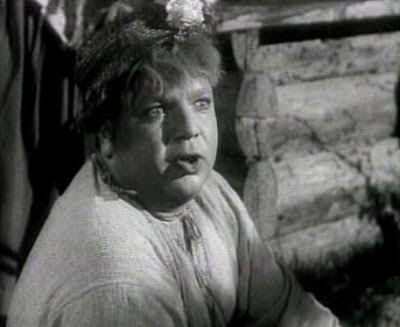

ulyana_beauty
Гончарівка

♡ ➤
248 вподобань
stetsko_king
Ой, люди, хочу я женитися! Улянка мені дуже подобається, гарна така, і я хочу, щоб вона була моєю жінкою. Я їй уже казав, а вона не хоче. Не знаю чого, бо я ж хороший!
У мене всього багато є: і хата, і їжа, і свині. Батько каже, що я багатий жених. А Улянка все одно хоче якогось Олексія. А він же бідний! Що вона з ним їсти буде?
Я б Улянці все давав, навіть сало найкраще. Будемо разом їсти, спати, гуляти. А ще я хочу, щоб вона мені вареники варила.
Порадьте, що мені робити, бо я вже хочу весілля.
#кохання #Гончарівка #щастя
#кохання #Гончарівка #щастя
Переглянути всі 5 коментарів

oleksii_ua
Стецьку, може, ти спочатку навчишся думати, а тоді женитися?
♡
2 год. · 12 вподобань

odarka_mama
Ой, який гарний жених! Улянко, не вередуй, кращого не знайдеш!
♡
1 год. · 3 вподобання

ulyana_beauty
Стецьку, та не треба мені твого сала! Я Олексія люблю!
♡
48 хв. · 8 вподобань
kandziuba_official
Та йди ти, Уляно! Мій Стецько багатий, а твій Олексій що має?
♡
35 хв. · 2 вподобання
stetsko_king
Ага! І я ще й гарний!
♡
30 хв. · 4 вподобання
9 листопада 1820